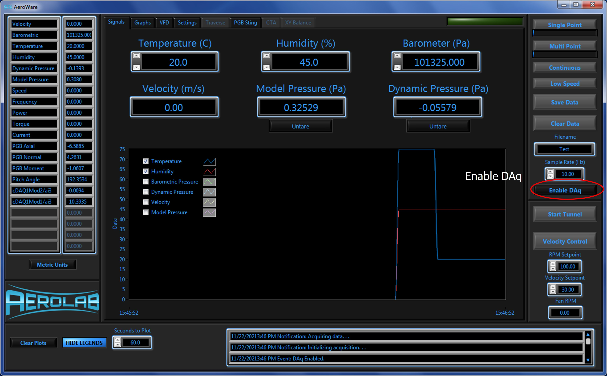

Laboratorio 3. Flujo externo
Contents
Laboratorio 3. Flujo externo#
Descripción práctica#
El objetivo de esta experiencia de laboratorio es estudiar y comprender el fenómeno de fuerza de arrastre en distintos cuerpos sometidos a un flujo externo.

La experiencia consiste en obtener experimentalmente los coeficientes de arrastre para diferentes geometrías utilizando un túnel de viento (Figura 1). El tunel de viento, del fabricante AEROLAB, permite la creación de corrientes de flujo de aire de manera controlada a través de una sección de pruebas. La velocidad del flujo es controlada a través del panel de control. Los objetos de prueba son montados sobre un dinamometro, el cual mide la fuerza axial (Axial force), transversal (Normal force) y torque flector (Pitching moment).
Metodología experimental#
La actividad consiste en medir el coeficiente de arrastre (\(C_D\)) en función del número de Reynodls \(\mathrm{Re}_D\) en 4 cuerpos romos:
Disco circular en posición vertical
Cuerpo aerodinámico
Esfera pequeña (\(D = 3~\mathrm{in}\))
Esfera grande (\(D = 4~\mathrm{in}\))
Resumen de pasos#
Paso 0. Abrir panel de control
Una vez que el equipo esté encendido, abrir la aplicación AeroWare para el control del túnel de viento (Figura 2)
{kind=link}
Paso 1. Montaje del objeto a ensayar
Nota. El detalle para el procedimento de montaje se verá en la sesión de inducción.
Abrir la compuerta del compartimiento de montaje.
Instalar el objeto en el dinamómetro.
Fijar el objeto al dinamómetro usando el tornillo pasador (evitar apretar el tornillo excesivamente).
Cerrar la compuerta del compartimiento de montaje.
Aplicar los seguros en la compuerta.
Paso 2. Habilitar el sistema de adquisición de datos (DAQ)
Una vez ya abierto el panel de control (Figura 3), haga click en Enable DAQ para poder comenzar a utilizar el equipo.
{kind=link}
Paso 3. Ajustar parámetros ambientales
En la pestaña “Signals”, ajustar los valores correspondientes a las variables ambientales, tales como temperatura, humedad y presión barométrica en el panel de control (Figura 4).

Paso 4. Tarar presión dinámica y modular
En la pestaña “Signals”, tarar los valores de presión modular (Module Pressure) y dinámica (Dynamic Pressure) en cero para poder comenzar a variar las velocidades en el túnel de viento (Figura 5)

Paso 5. Tarar fuerzas y torques en el dinamómetro
En la pestaña “PGB Sting”, tarar los valores de Axial force, Normal force y Pitching Moment (Figura 6)

Paso 6. Ajustar velocidades del túnel
Antes de encender el motor del ventilador, en el recuadro Velocity Setpoint, ajustar la velocidad del túnel a un valor inicial moderado (\(V \lesssim 10~\mathrm{m/s}\)) (Figura 7).
Nota Verificar que el boton de control de velocidad este en modo Velocity Control.

Paso 7. Encendido Túnel
Hacer click en Start Tunnel para encender el equipo (Figura 8).
Luego, en la pestaña “PGB Sting” desmarcar todas las casillas del gráfico, excepto PGB axial.
{kind=link}
Paso 8. Registro de datos
Ajuste la velocidad del tunel a los valores indicados en la tabla adjunta
Para cada velocidad, esperar hasta que los valores de fuerza se estabilicen
Registrar la fuerza axial y velocidad
Repetir el procedimiento para una nueva velocidad
Paso 9. Detención del equipo
Una vez realizadas las mediciones, se debe hacer detención y término de uso del panel de control. Para poder llevar a cabo esta tarea, se debe seguir las siguientes indicaciones:
Ajustar la velocidad del túnel de viento, de manera paulatina, a una velocidad de \(10~\mathrm{m/s}\).
Hacer click en el botón Stop Tunnel.
Desmontar el objeto

Nota. En caso que corresponda, repetir procedimiento desde el paso 1.
Finalizar experiencia
Hacer click en Disable DAQ (Para ello, vuelva a hacer click en Enable DAQ).
Cerrar el panel de control de AEROLAB. Este punto solamente puede ser llevado a cabo una vez se haya deshabilitado el DAQ del panel de control (Figura 10).
{kind=link}
Actividades a realizar#
Actividad 1. Coeficientes de arrastre para esferas#
Determinar el coeficiente de arrastre (\(C_D\)) de ambas esferas en función de \(\mathrm{Re}_D\) y comparar con valores en la literatura. Luego responder las preguntas del cuestionario.
Procedimiento
Para cada velocidad, determinar \(C_D\) y \(\mathrm{Re}_D\) asociado utilizando las expresiones vistas en clase (repetir el procedimiento para la esfera pequeña y grande)
Extraer los datos de \(C_D\) vs \(\mathrm{Re}_D\) para una esfera indicados en la Figura 11.
Sugerencia. Utilizar la aplicación libre WebPlotDigitizer para extraer los datos tabulados. El siguiente tutorial explica como usar la aplicación.
.png){kind=link}
En una mismo gráfico \(C_D\) vs \(\mathrm{Re}_D\), muestre la curva con los valores extraidos de la imagen (tabulados) y los datos obtenidos experimentalmente. Mantener los límites de los ejes vertical y horizontal de la figura original. Utilice línea contínua de color negra para los datos tabulados, y círculos de color rojo (esfera grande) y azul (esfera pequeña) para los datos obtenidos experimentalmente.
Determine el error absoluto y relativo para cada \(C_D\) obtenido experimentalmente.
Cuestionario
¿En qué rango de Reynolds se ubican los valores obtenidos experimentalmente?
¿Para qué valores de velocidad del viento se obtuvo mejor precisión?
En base a los 5 regimenes de flujo para arrastre en esferas discutidos en clase ¿A qué tipo de flujo corresponde?
¿Que cambios al experimento sugiere para trabajar en otros régimenes de flujo?
Actividad 2. Coeficiente de arrastre para disco y cuerpo aerodinámico#
Determinar el coeficiente de arrastre (\(C_D\)) del disco circular y el cuerpo aerodinámico.
Procedimiento
Para cada velocidad, determinar \(C_D\) y \(\mathrm{Re}_D\) asociado utilizando las expresiones vistas en clase.
Comparar con los valores reportados en la literatura calculando el error relativo y absoluto.
Actividad 3. Ejercicio propuesto#
Resolver el problema propuesto al final de la experiencia.